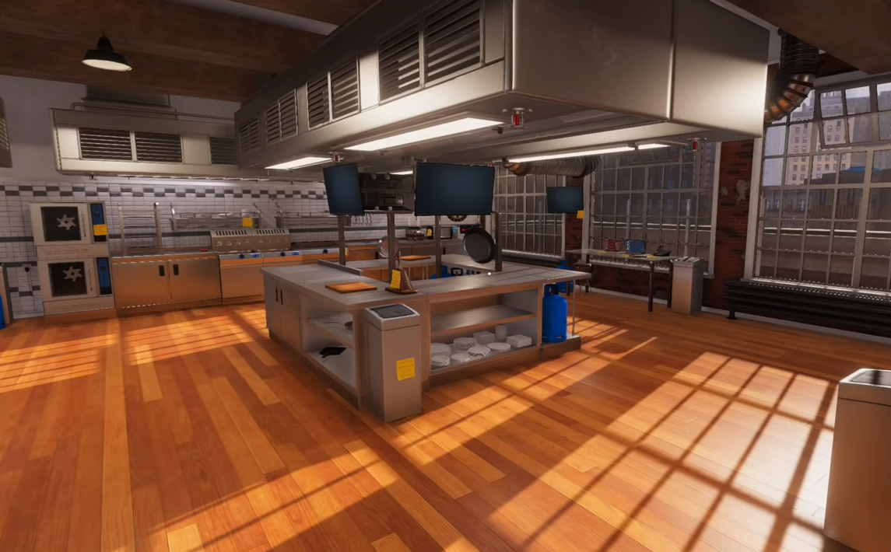
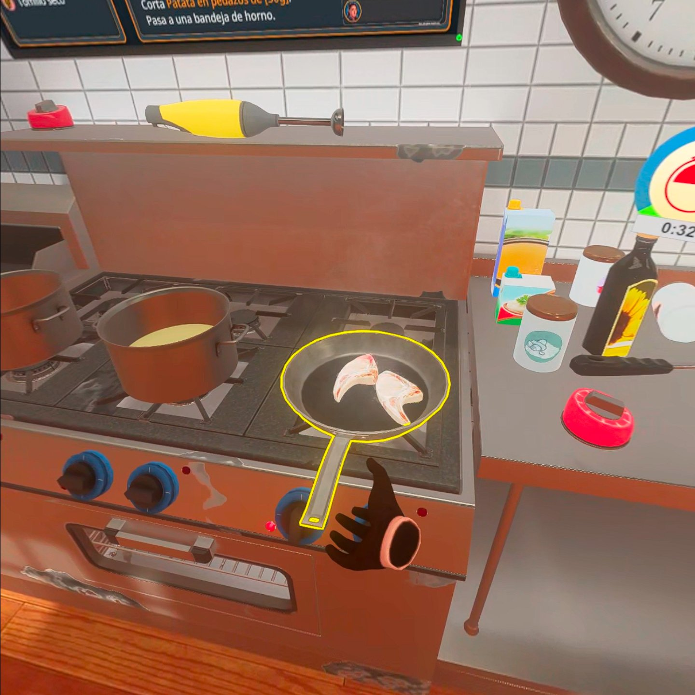

Llevamos el aprendizaje de la Gastronomía Nacional e Internacional de manera presencial/virtual a un entorno de realidad aumentada.
Haciendo posible que el usuario, adquiera conocimientos básicos e introductorios en este ámbito.
Implementado cursos y lecciones al aprendiz, donde este pueda llegar a una formación de manera presencial con un entendimiento más amplio en la carrera de la Gastronomía
Desarrollando un entorno interactivo para el usuario, donde aprenda sobre sistema haccp, conocer la materia prima, metodos de cocción, diferenciar y comparar utensilios de cocina, etc.

